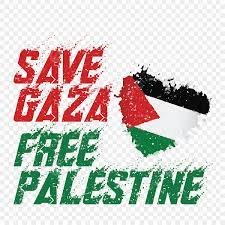

تعد دولة فلسطين من أهم الدول الإسلاميّة والمقدسة على مر العصور، فهي تتمتع بمكانة عظيمة جداً أجمع عليها العالم، فمكانتها الدينيّة والثقافيّة، والسياحيّة، والتاريخيّة تفتقر إليها الكثير من الدول العربيّة الكبرى الأخرى. وسوف نتحدث في هذا المقال عن بعض المعلومات العامة والمهمة عن دولة فلسطين
الفاء : افداء لك نضحي بالدماء رخيصة.
اللام:لوم على كل عربي مسلم تهاون لحظة عن الدفاع عنك
السين:سحابة الاستعمار سيحين لها أجل ثم تنجلي عن شمس الحرية.
الطاء:طفل بيديه حجارة يقف بالمرصاد لصهيوني يقود دبابة .
الياء:يهودي جبان أجله على يد العرب قد حان
النون:نور الله يطوق شهداء فلسطين الابرار .
في 27 ديسمبر/كانون الأول 2008، بدأت إسرائيل حربا على قطاع غزة أطلقت عليها اسم "عملية الرصاص المصبوب"، وردت عليها المقاومة الفلسطينية في القطاع بعملية سمتها "معركة الفرقان".
تُعتبر مدينة غزّة أكبر مدينة في قطاع غزة وأرض فلسطين، ويبلغ عدد السكّان فيها ما يُقارب 410,000 نسمة في المدينة الداخليّة و1.4 مليون نسمة في المنطقة الحضريّة، وتُسمّى المدينة بمدينة غزة حتى يتمّ تمييزها وتفريقها عن قطاع غزة الكبير، كما تُعرف بأنّها أقدم مدينة في العالم، وتقع في الجنوب الغربي من فلسطين على الطريق الساحلي للبحر الأبيض المتوسط ما بين شمال قارة أفريقيا، والأراضي الخضراء في بلاد الشام
,و في 27 ديسمبر/كانون الأول 2008، بدأت إسرائيل حربا على قطاع غزة أطلقت عليها اسم "عملية الرصاص المصبوب"، وردت عليها المقاومة الفلسطينية في القطاع بعملية سمتها "معركة الفرقان".
